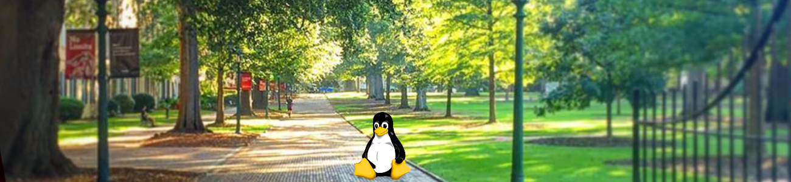

LUG Presentations and Demos
Below are past LUG presentations and demos from our monthly LUG meetings. You can access those with additional content/code by clicking here or also directly from our GitHub repo which is linked at the bottom of this page. Recordings from monthly LUG meetings are stored and accessible in the LUG Team site or from the links below.
Monthly Presentations
December 2021
- Inaugural LUG meet and greet!
- Click to view the meeting recording available in the LUG Team
January 2022
- General Topic Discussion
February 2022
- Raspberry Pi Demo - Presented by Jessie O'Connor
- Click to view the meeting recording available in the LUG Team
March 2022
April 2022
- ACLs Demo - Presented by Matt Darby
- Click to view the meeting recording available in the LUG Team
May 2022
- Linux Current Events and Future LUG Plans
- Click to view the meeting recording available in the LUG Team
June 2022
- General Topic Discussion - Increasing awareness of LUG
- Click to view the meeting notes available in the LUG Team
July 2022
- General Topic Discussion and Future LUG Plans - Linux Install Fest Plans
- See meeting chat history in Team for more (no recording available).
August 2022
- OOD Demo (portal for interactive desktops on Hyperion cluster) - Presented by Nathan Elger and September 2022 Linux Install Fest Plans!
- See meeting chat history in Team for more (no recording available).